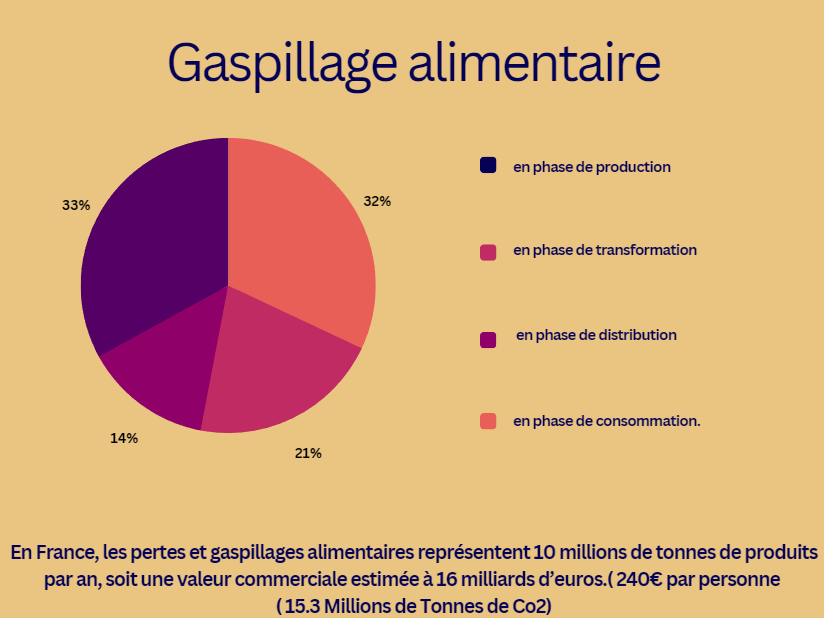

Le gaspillage c'est quoi ?
Le gaspillage est une forme de surconsommation ou de surplus de déchêts, il se représente sous forme d'alliments ou d'objets. Mais le monde connais trois grand gaspilleurs (la Chine, l'Inde et l'Amerique du nord).
Il se créer a cause de l'Homme, qui jette se qu'il estime inutilisable, alors que la plus part du temps les alliments reste utilisatble ou recyclable.
C'est pour cela que l'on vas s'intérésser au cas de la France qui, malgré ce que l'on pense, gaspille énormément. Elle jette environ 10 millions de tones d'alliments qui équivaux à 15.3 millions de tones de CO2.